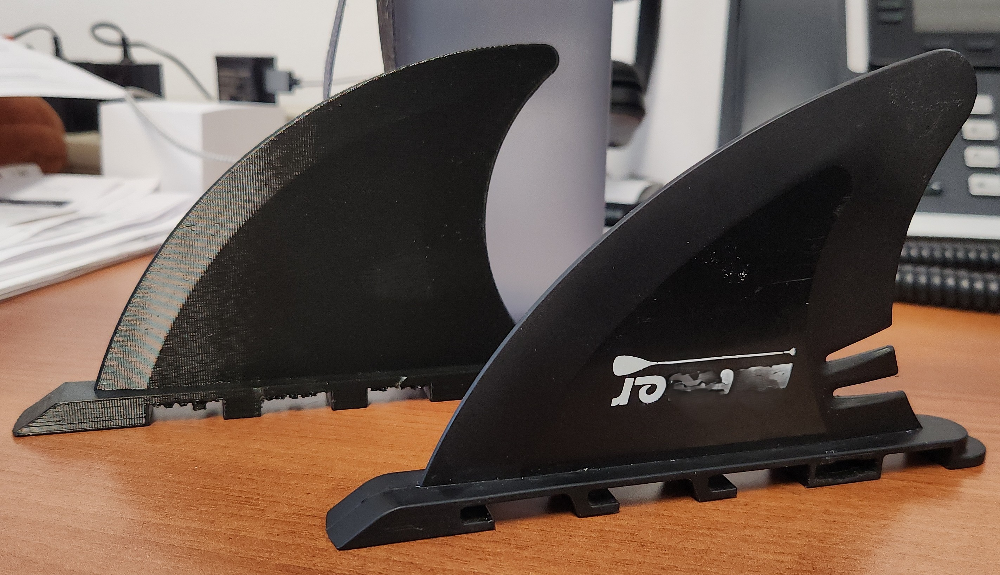

Fundamentals
Core modeling exercises that built foundational skills in sketching, extrusion, revolving, threading, and parametric dimensions.

Door Stop
Simple wedge geometry with fillets and chamfers. Introduction to sketch constraints, extrusion, and basic dimensioning.

Hex Nut
Hexagonal profile with internal threading, chamfered edges, and precise tolerancing to standard fastener specs.

Screwdriver
Multi-body model with ergonomic handle and tip geometry. Practice with loft, revolve, and multi-material assemblies.
Organic & Complex Forms
Exercises in revolving, lofting, and surface modeling — translating real-world objects with curves into accurate 3D models.

Glass Bottle 1
Revolved profile with variable wall thickness. Focus on smooth spline curves and shell operations.

Bottle 2
More complex bottle profile with tapered neck and threaded cap interface. Built on techniques from Bottle 1.

Light Bulb
Multi-component model with glass envelope, filament support, and Edison screw base threading.

Bike Handle Bar Grip
Ergonomic cylindrical form with textured grip pattern. Circular pattern operations and surface texturing.
Functional & Applied Design
Projects that solve real problems — designed with manufacturing, assembly, and end-use in mind.

Dog Bowl
Functional bowl with full technical drawing — section views, dimensions, and tolerances. Designed for manufacturing.

Auger
Helical sweep geometry with variable pitch. Complex 3D path modeling with precise pitch and diameter control.

4" Mortar Rack — Fireworks
Functional mortar tube rack for professional displays. Designed for strength, quick assembly, and safe tube spacing per NFPA standards.

Custom DMX Control Box
3D-printed enclosure housing DMX receiver boards, connectors, and wiring. Designed for fit, printed and assembled with real electronics. See full project →

Paddle Board Fin — Reverse Engineering
The manufacturer no longer makes a replacement fin for a popular paddle board model. A user lost their fin and needed a replacement. Micrometer measurements were taken and recorded on a digital paper tablet, then translated into a 3D-printable CAD model in Fusion 360. See full project →
Coming Next
Projects in progress or planned. This portfolio is a living document — new models are added as skills expand.
Sheet Metal Bracket
Exploring Fusion 360 sheet metal — bend allowances, k-factor, and flat pattern export for fabrication.
Multi-Part Assembly
Fully constrained assembly with joints, motion studies, and interference checks.
Your Next Project
Replace this card with your next completed model. Keep building, keep learning.